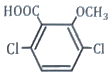
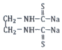
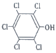
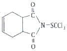
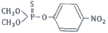
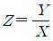

식물보호기사 (2022-04-24 기출문제)
1과목: 식물병리학
1. 기주 식물이 병원균의 침입에 자극을 받아 방어를 목적으로 생성하는 물질은?
- 파이토톡신
- 펙티나아제
- 지베렐린
- 파이토알렌식
(정답률: 54%)

2. 병원균의 침입방법으로 주로 수공감염 하는 작물의 병은?
- 감자더뎅이병
- 보리겉깜부기병
- 고구마무름병
- 벼흰잎마름병
(정답률: 65%)
3. 배나무붉은별무늬병균의 중간 기주는?
- 매자나무
- 향나무
- 소나무
- 좀꿩의 다리
(정답률: 79%)
4. 병원균이 기생체 침입 시 균사가 밀집해서 감염욕을 만들어 침입하는 것은?
- 뽕나무자주날개무늬병
- 벼깨씨무늬병
- 사과탄저병
- 오이잿빛곰팡이병
(정답률: 42%)
5. 생물적 방제방법의 가장 큰 장점은?
- 친환경적이다.
- 비용이 많이 들지 않는다.
- 속효성이다.
- 잔효성이 길다.
(정답률: 72%)
6. 담배모자이크바이러스의 구성 성분 중 병원성을 갖는 것은?
- 핵산
- 단백질
- 탄수화물
- 지질
(정답률: 65%)
7. 도열병균의 특정 레이스를 어떤 벼 품종에 접종하였더니 병반 형성이 전혀 없거나 과민성 반응이 나타났다면 이 품종의 저항성으로 옳은 것은?
- 수평 저항성
- 수직 저항성
- 포장 저항성
- 레이스 비특이적 저항성
(정답률: 50%)
8. 포도나무 노균병균이 월동하는 곳은?
- 곤충의 유충
- 병든 잎
- 종자
- 뿌리
(정답률: 67%)
9. 향나무에 감염된 배나무붉은별무늬병균의 포자 이름은?
- 여름포자
- 겨울포자
- 녹포자
- 분생포자
(정답률: 50%)
10. 식물병원 바이러스와 바이로이드의 차이점은?
- 입자내 핵산의 존재 유무
- 핵산의 종류
- 단백질 외피의 존재 유무
- 입자내 지질의 존재 유무
(정답률: 43%)
11. 저장 곡물에 Aflatoxin 이라는 독소를 생성하는 균은?
- Aspegillus flaʋus
- Achlya oruzae
- Ascochyta pisi
- Alternaria mali
(정답률: 64%)
12. 토양전반에 의해 발생하는 토양전염병은?
- 벼도열병
- 팥흰가루병
- 오이모잘록병
- 배나무갈색무늬병
(정답률: 61%)
13. 담자균류에 의한 깜부기병에 대한 설명으로 옳지 않은 것은?
- 보리겉깜부기병은 화기감염으로 발병한다.
- 보리속깜부기병은 유묘감염으로 발병한다.
- 옥수수깜부기병은 성묘감염으로 발병한다.
- 밀비린깜부기병은 화기감염으로 발병한다.
(정답률: 35%)
14. 진균의 특징으로 옳지 않은 것은?
- 세포내 핵이 있다.
- 영양체는 주로 균사이다.
- 번식체는 주로 포자이다.
- 세포벽은 키틴을 갖지 않는다.
(정답률: 61%)
15. 식물 바이러스병을 진단하는 방법으로 옳지 않은 것은?
- 지표식물검정법
- 효소항체검정법
- 그램염색법
- PCR법
(정답률: 60%)
16. 식물 검역에 대한 설명으로 옳은 것은?
- 식물에 면역작용이 생기게 하여 병을 방제하는 것
- 농약 등을 사용하여 화학적으로 방제하는 것
- 열처리 등에 의해 병원균을 박멸하는 것
- 병원균의 유입을 차단하고자 사전에 검사하여 병을 예방하는 것
(정답률: 74%)
17. 수박덩굴쪼김병균이 월동하는 곳은?
- 매개곤충의 알
- 토양
- 저장고
- 중간기주
(정답률: 57%)
18. 벼 오갈병을 매개하는 곤충은?
- 벼멸구
- 끝동매미충
- 마름무늬매미충
- 복숭아혹진딧물
(정답률: 56%)
19. 사과겹무늬썩음병을 일으키는 병원체는?
- 세균
- 곰팡이
- 바이러스
- 파이토플라스마
(정답률: 53%)
20. 감자둘레썩음병균이 월동하는 곳은?
- 잎
- 덩이줄기
- 토양
- 열매
(정답률: 61%)
2과목: 농림해충학
21. 톱밥같은 배설물을 밖으로 내보내지 않고 수피 속의 갱도에 쌓아 놓아 피해를 발견하기가 어려운 해충은?
- 미끈이하늘소
- 알락하늘소
- 향나무하늘소
- 털두꺼비하늘소
(정답률: 43%)
22. 다음 중 호흡계의 기문 수가 가장 적은 곤충은?
- 나비 유충
- 나방 유충
- 모기붙이 유충
- 딱정벌레 유충
(정답률: 60%)
23. 내배엽에서 만들어진 곤충의 소화기관은?
- 중장
- 소낭
- 전위
- 후장
(정답률: 54%)
24. 감자나방의 피해에 대한 설명으로 가장 거리가 먼 것은?
- 감자에 배설물이 나와 있다.
- 어린감자의 생장점을 파고 들어간다.
- 감자 잎의 표피를 뚫고 들어가 앞뒤 표피만 남긴다.
- 담배의 뿌리를 가해하고, 밖으로 배설물을 배출한다.
(정답률: 43%)
25. 진딧물의 생식방법에 대한 설명으로 옳은 것은?
- 다른 곤충과는 달리 태생에 의해서만 번식한다.
- 양성생식과 단위생식을 함께 하며 태생도 한다.
- 단위생식과 난생에 의해서만 번식한다.
- 난생과 태생을 번갈아 한다.
(정답률: 63%)
26. 온실 재배 토마토에 바이러스병을 매개하는 해충으로 가장 피해를 많이 주는 것은?
- 외줄면충
- 갈색여치
- 담배가루이
- 목화진딧물
(정답률: 58%)
27. 누에의 휴면호르몬이 합성되는 곳은?
- 신경분비세포
- 카디아카체
- 알레로파시
- 알라타체
(정답률: 49%)
28. 다음 중 완전변태를 하지 않는 것은?
- 버들잎벌레
- 진달래방패벌레
- 복숭아명나방
- 솔수염하늘소
(정답률: 56%)
29. 배추좀나방에 대한 설명으로 옳지 않은 것은?
- 겨울철에도 월평균기온이 영상 이상이면 발육과 성장이 가능하다.
- 일부 지역에서는 낙하산벌레라고도 한다.
- 삽자화과 채소류를 주로 가해한다.
- 세대기간이 길어 번식속도가 느리다.
(정답률: 59%)
30. 다음 중 유시류에 속하는 것은?
- 낮발이
- 하루살이
- 좀붙이
- 톡톡이
(정답률: 50%)
31. 솔나방에 대한 설명으로 옳지 않은 것은?
- 새로 난 잎을 식해하는 것이 보통이나 밀도가 높으면 묵은 잎도 식해한다.
- 유충이 소나무의 잎을 식해하며 심한 피해를 받은 나무는 고사하기도 한다.
- 연 1회 발생하고 제5령 충으로 월동한다.
- 주로 월동 후의 유충기에 식해한다.
(정답률: 45%)
32. 다음 중 성충이 과실을 직접 가해하는 해충은?
- 복숭아명나방
- 배명나방
- 으름밤나방
- 포도유리나방
(정답률: 30%)
33. 미각과 관계가 없는 곤충의 기관은?
- 큰턱
- 작은턱수염
- 윗입술
- 아랫입술수염
(정답률: 61%)
34. 벼 줄기 속을 가해하여 새로 나온 잎이나 이삭이 말라 죽도록 가해하는 해충은?
- 진딧물
- 혹명나방
- 이화명나방
- 끝동매미충
(정답률: 49%)
35. 다음 중 유충에서 성충까지 입틀의 형태가 변하지 않는 것은?
- 꿀벌
- 말매미
- 학질모기
- 배추흰나비
(정답률: 41%)
36. 다음 중 곤충 표피의 가장 바깥쪽에 있는 것은?
- 원표피
- 왁스층
- 기저막
- 시멘트층
(정답률: 42%)
37. 총채벌레목에 대한 설명으로 옳지 않은 것은?
- 단위생식도 한다.
- 산란관이 잘 발달하여 식물의 조직 안에 알을 낳는다.
- 불완전변태군에 속한다.
- 입틀의 좌우가 같다.
(정답률: 53%)
38. 한여름 휴한기에 비닐하우스를 밀폐하고 토양온도를 높인 땅속 해충 방제법은?
- 화학적 방제법
- 환경적 방제법
- 행동적 방제법
- 물리적 방제법
(정답률: 48%)
39. 분류학적으로 개미가 속하는 곤충목은?
- 딱정벌레목
- 총채벌레목
- 노린재목
- 벌목
(정답률: 52%)
40. 다음 중 유약호르몬이 분비되는 기관은?
- 더듬이샘
- 앞가슴샘
- 알라타체
- 카디아카체
(정답률: 50%)
3과목: 재배학원론
41. 다음 중 휴작의 필요 기간이 가장 긴 작물은?
- 벼
- 고구마
- 토란
- 수수
(정답률: 48%)
42. 다음 중 자연교잡률이 가장 낮은 것은?
- 수수
- 밀
- 아마
- 보리
(정답률: 40%)
43. 답압을 진행하면 안 되는 경우는?
- 분얼이 왕성해질 경우
- 유수가 생긴 이후일 경우
- 월동 전 생육이 왕성할 경우
- 월동 중 서릿발이 설 경우
(정답률: 32%)
44. 식물체에서 기관의 탈락을 촉진하는 식물생장 조절제는?
- 옥신
- 지베렐린
- 시토키닌
- ABA
(정답률: 44%)
45. 화성유도 시 저온ㆍ장일이 필요한 식물의 저온이나 장일을 대신하는 가장 효과적인 식물호르몬은?
- 지베렐린
- CCC
- MH
- ABA
(정답률: 57%)
46. 눈이 트려고 할 때 필요하지 않는 눈을 손끝으로 따주는 것을 무엇이라 하는가?
- 적아
- 환상박피
- 절상
- 휘기
(정답률: 66%)
47. 작물의 내동성에 대한 설명으로 옳은 것은?
- 포복성인 작물이 직립성보다 약하다.
- 세포내의 당함량이 높으면 내동성이 감소된다.
- 원형질의 수분투과성이 크면 내동성이 증대된다.
- 작물의 종류와 품종에 따른 차이는 경미하다.
(정답률: 45%)
48. 다음 중 중일성 식물은?
- 코스모스
- 토마토
- 나팔꽃
- 국화
(정답률: 52%)
49. 풍해를 받았을 경우 작물체에 나타나는 생리적 장해로 가장 거리가 먼 것은?
- 광합성의 감퇴
- 호흡의 증대
- 작물체온의 증가
- 작물체의 건조
(정답률: 35%)
50. 다음 중 작물의 적산온도가 가장 낮은 것은?
- 담배
- 벼
- 메밀
- 아마
(정답률: 43%)
51. 다음 중 수종에서 발아가 가장 어려운 작물은?
- 벼
- 상추
- 당근
- 콩
(정답률: 42%)
52. 녹체춘화형 식물로만 나열된 것은?
- 추파맥류, 봄무
- 사리풀, 양배추
- 봄무, 잠두
- 완두, 잠두
(정답률: 40%)
53. 다음 중 작물의 복토 깊이가 가장 깊은 것은?
- 오이
- 당근
- 생강
- 파
(정답률: 56%)
54. 다음 중 CO2 보상점이 가장 낮은 식물은?
- 밀
- 보리
- 벼
- 옥수수
(정답률: 35%)
55. 다음 중 뿌림골을 만들고 그곳에 줄지어 종자를 뿌리는 방법으로 옳은 것은?
- 적파
- 점파
- 산파
- 조파
(정답률: 44%)
56. 벼의 침관수 피해가 가장 크게 나타나는 조건은?
- 고수온, 유수, 청수
- 고수온, 정체수, 탁수
- 저수온, 정체수, 탁수
- 저수온, 유수, 청수
(정답률: 48%)
57. 다음 중 동상해 대책으로 틀린 것은?
- 방풍시설 설치
- 파종량 경감
- 토질 개선
- 품종 선정
(정답률: 52%)
58. 다음 중 식물학상 과실로 과실이 나출된 식물은?
- 쌀보리
- 겉보리
- 귀리
- 벼
(정답률: 27%)
59. 다음 중 땅속줄기로 번식하는 작물은?
- 베고니아
- 마
- 생강
- 고사리
(정답률: 53%)
60. 다음 중 인과류로만 나열되어 있는 것은?
- 사과, 배
- 복숭아, 자두
- 무화과, 밤
- 감, 딸기
(정답률: 52%)
4과목: 농약학
61. Fenthion 30% 유제를 500배로 희석해서 10a당 144L를 살포하여 해충을 방제하고자 할 때 Fenthion 30% 유제의 소요량(mL)은?
- 144
- 188
- 244
- 288
(정답률: 29%)
62. 소나무에서 발생하는 솔나방을 방제하는데 주로 사용할 수 있는 유기인제 약제는?
- trifluralin
- Fenitrothion
- chlorothalonil
- Glufosinate ammonium
(정답률: 29%)
63. 살초작용에 따른 제초제의 구분에서 식물체의 뿌리로부터 위쪽으로만 약 성분이 전달되는 제초제는?
- 호르몬형
- 비호르몬형
- 접촉형
- 이행형
(정답률: 46%)
64. 전착제에 대한 설명으로 적절하지 못한 것은?
- 우리나라에서는 농약의 범주에 속한다.
- 유효성분의 측정은 표면장력으로 확인한다.
- 농약의 밀도를 높여 균일 살포를 돕는다.
- 농약의 주성분을 식물체에 잘 확전, 부착시키기 위한 보조제이다.
(정답률: 22%)
65. 과실의 착색ㆍ숙기촉진을 위하여 주로 사용되는 약제는?
- butralin
- Indoxacarb
- calcium carbonate
- ethephon
(정답률: 50%)
66. Kasugamycin 및 Streptomycin과 같은 살균제의 작용기작은?
- 호흡저해
- 단백질 합성 저해
- 세포벽 형성 저해
- 세포막 형성 저해
(정답률: 49%)
67. 농약관리법령상 농약의 방제 대상이 아닌 것은?
- 곤충
- 응애
- 선충
- 천적
(정답률: 57%)
68. 식물생장조절제(Plant Growth Tegulator; PGR)로 사용되지 않은 농약은?
- gibberellic acid
- 1-naphthylacetamide
- mepiquat chloride
- monocrotophos
(정답률: 23%)
69. 저장 곡류(穀類)에 주로 사용되는 훈증제(fumigant)는?
- Triclopyr-TEA
- Procymidone
- Methyl bromide
- Alpha-cypermethrin
(정답률: 40%)
70. 침투성 제초제로 아래와 같은 구조를 갖는 성분은?

- IAA
- 2, 4-D
- dicamba
- fluroxypyr
(정답률: 32%)
71. 농약 등록을 위한 농약안전성 평가 항목 중 환경생물독성에 해당되는 것은?
- 급성독성
- 어독성
- 아급성 독성
- 신경 독성
(정답률: 55%)
72. 비침투성 살균제인 Mancozeb에 대한 설명으로 옳은 것은?
- 유기유황계 농약이다.
- 무기유황계 농약이다.
- 구리화합물이다.
- 유기수은제 농약이다.
(정답률: 43%)
73. Pyrethrin 살충제의 주요 살충기작은?
- 원형질독
- 호흡독
- 근육독
- 신경독
(정답률: 50%)
74. 약해의 원인으로 가장 거리가 먼 것은?
- 농약제제에 불순물의 혼입
- 표준 사용량보다 적게 사용
- 원제 부성분에 의한 이상발생
- 동시사용으로 인한 약해
(정답률: 50%)
75. Captan(Orthocide)의 구조식은?




(정답률: 36%)
76. 벼재배용 농약의 사용량을 고려한 어독성 구분을 위한 아래 식에 대한 설명 중 틀린 것은?

- 계산결과 Ｚ>5일 경우 Ⅰ급으로 구분한다.
- 계산결과 Ｚ<0.1일 경우 Ⅲ급으로 구분한다.
- Ⅹ는 농약등의 어류 LD50이다.
- Υ는 농약등의 논물 중 기대농도치(mg/L, 수심 5cm)이다.
(정답률: 28%)
77. 농약관리법령상 고독성 농약에 해당하는 농약의 급성 경구독성(LF50)은? (단, 농약은 고체이며, 단위는 mg/kg 체중이다.)
- 5 미만
- 5 이상, 50 미만
- 50 이상, 500 미만
- 500 이상
(정답률: 42%)
78. 농약 보조제가 아닌 것은?
- 용제
- 계면활성제
- 중량제
- 도포제
(정답률: 35%)
79. 농약관리법령상 대립제(GC)의 검사항목은?
- 확산성
- 수화성
- 분말도
- 가비중
(정답률: 22%)
80. 다음 중 입자(粒子)의 크기가 가장 큰 제형은?
- 입제
- 분제
- 수화제
- 정제
(정답률: 36%)
5과목: 잡초방제학
81. 다음 중 벼와 광경합이 가장 크게 일어나는 잡초는?
- 논뚝외풀
- 올미
- 쇠털골
- 강피
(정답률: 54%)
82. 다음 중 사초과 잡초가 아닌 것은?
- 뚝새풀
- 향부자
- 올방개
- 너도방동사니
(정답률: 28%)
83. 상호대립억제작용에 대한 설명으로 옳은 것은?
- 쌍자엽식물에는 있으나 단자엽식물에는 없다.
- 작물과 작물간에는 일어나지 않는다.
- 타감작용이라고 하기도 한다.
- 작물은 받아 시에만 피해를 받는다.
(정답률: 43%)
84. 잡초 종자의 산포 방법으로 틀린 것은?
- 가막사리 : 바람에 잘 날려서 이동함
- 소리쟁이 : 물에 잘 떠서 운반됨
- 바랭이 : 성숙하면서 흩어짐
- 메귀리 : 사랑이나 동물 몸에 잘 부착함
(정답률: 40%)
85. 2년생 잡초에 대한 설명으로 틀린 것은?
- 망초, 냉이, 방가지똥 등이 있다.
- 2년 동안에 생활환을 완전히 끝낸다.
- 월동기간에 화아가 분화하며 주로 온대지역에서 볼 수 있는 잡초이다.
- 주로 봄과 여름에 발생하여 같은 해 여름과 가을까지 결실하고 고사한다.
(정답률: 44%)
86. 잡초의 유용성에 대한 설명으로 틀린 것은?
- 토양의 침식을 방지한다.
- 병해충 전파를 막아준다.
- 토양에 유기물을 공급한다.
- 상황에 따라 작물로써 활용할 수 있다.
(정답률: 50%)
87. 다음 중 지하경으로 번식이 가능한 잡초로 가장 거리가 먼 것은?
- 향부자
- 올방개
- 올미
- 돌피
(정답률: 35%)
88. 발아의 계절성에 대한 설명으로 옳은 것은?
- 습도에 반응하여 발아하는 특성이다.
- 광도에 반응하여 발아하는 특성이다.
- 온도에 반응하여 발아하는 특성이다.
- 일장에 반응하여 발아하는 특성이다.
(정답률: 37%)
89. 방동사니과 잡초가 아닌 것은?
- 참새피
- 매자기
- 올방개
- 올챙이고랭이
(정답률: 22%)
90. 다음 중 잡초의 초형이 가장 작은 것은?
- 가막사리
- 쇠털골
- 올방개
- 피
(정답률: 29%)
91. 밭 잡초로만 나열되지 않은 것은?
- 개비름, 닭의장풀
- 깨풀, 좀바랭이
- 가래, 여뀌바늘
- 메귀리, 속속이풀
(정답률: 42%)
92. 벼와 피를 구분할 때 주요한 행태적 차이점은?
- 잎초와 떡잎의 유무
- 잎선와 엽초의 유무
- 엽신과 잎선의 유무
- 잎혀와 엽이의 유무
(정답률: 44%)
93. 잡초의 밀도가 증가되면 작물의 수량이 감소한다. 이에 따라 어느 밀도 이상으로 잡초가 존재하면 작물의 수량이 현저히 감소되는 수준까지의 밀도를 무엇이라 하는가?
- 경제적 허용밀도
- 잡초허용 한계밀도
- 잡초허용 최대밀도
- 잡초피해 한계밀도
(정답률: 48%)
94. 잡초의 생육특성에 대한 설명으로 틀린 것은?
- 바랭이, 여뀌는 건조에 대한 내성이 크다.
- 향부자, 별꽃은 토양의 산소 농도가 낮아도 잘 발생한다.
- 잡초 종자가 무거울수록 출아심도가 깊다.
- 갈퀴덩굴, 뚝새풀은 주로 비옥한 땅에서 발생하는 습성이 있다.
(정답률: 27%)
95. 다음 중 잔디밭에 가장 많이 발생하는 잡초로만 나열된 것은?
- 민들레, 명아주
- 여뀌, 물피
- 한련초, 개비름
- 토끼풀, 꽃다지
(정답률: 50%)
96. 잡포의 생장형에 따른 분류로 틀린 것은?
- 총생형 : 뚝새풀
- 분지형 : 광대나물
- 포복형 : 가막사리
- 직립형 : 명아주
(정답률: 33%)
97. 다음 중 포자로 번식하는 것은?
- 가래
- 개구리밥
- 생이가래
- 방동사니
(정답률: 27%)
98. 잡초 종자가 휴면하는 원인으로 거리가 가장 먼 것은?
- 배의 미숙
- 생장조절물질의 불균형
- 물의 투수성 방해
- 탄산가스의 결핍
(정답률: 44%)
99. 잡초 종자의 모양이 올바르게 연결된 것은?
- 포크 모양 : 바랭이, 어저귀
- 낙하산 역할의 솜털 : 망초, 민들레
- 비늘 모양의 가시 : 명아주, 도깨비바늘
- 낚시 바늘 모양의 돌기 : 도꼬마리, 달개비
(정답률: 47%)
100. 다음 중 발아 적온이 가장 높은 것은?
- 메귀리
- 올챙이고랭이
- 향부자
- 뚝새풀
(정답률: 19%)